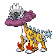

オーガポン みどりのめんex・メガガルーラex・タケルライコexを中心カードとしてまとめた分類です。完全リストでのコライドンexの不採用も区別の手掛かりです。
自動説明：承認済み分類の定義＋所属デッキの採用事実。説明版 30th-profile-v1。対象期間の60枚確認済み27入賞枠・27コード・23大会（未確認0枠）を用いています。



構築プロファイルと人の確認欄
当週 2026-10-16〜2026-10-22（7日） / 前週 2026-10-09〜2026-10-15（7日）
V2 対面推定（参考値）オーガポン みどりのめんex・メガガルーラex・タケルライコexを中心カードとしてまとめた分類です。完全リストでのコライドンexの不採用も区別の手掛かりです。
自動説明：承認済み分類の定義＋所属デッキの採用事実。説明版 30th-profile-v1。対象期間の60枚確認済み27入賞枠・27コード・23大会（未確認0枠）を用いています。
主戦略、攻撃役、エネルギー構成、例外を分けて記入します。
仮例: 「主攻撃: A / エネルギー: B中心 / 例外: C」
自動生成：所属リストの観測構成
平均枚数の分母：60枚確認済み入賞枠。不採用の0枚と同コードの反復入賞を含む。
中心カード・相方の実測：
ポケモン（採用率80%以上）：オーガポン みどりのめんex 27/27枠・平均2.89枚 / キチキギスex 27/27枠・平均1.00枚 / タケルライコex 27/27枠・平均1.85枚
トレーナーズ（採用率80%以上）：アカマツ 27/27枠・平均3.89枚 / エネルギーつけかえ 27/27枠・平均3.33枚 / シアノ 27/27枠・平均2.07枚
エネルギー（採用率80%以上）：基本草エネルギー 27/27枠・平均6.63枚 / 基本闘エネルギー 27/27枠・平均2.56枚 / 基本雷エネルギー 27/27枠・平均2.41枚
採用率80%以上の観測カードを各区分3枚まで表示。構築の安定性・推奨は判定しない。
説明用に指定したカードとエネルギー名の組合せです。相方や構築差を網羅せず、枚数の一致、新分類や戦略の一致を意味しません。
見えたカードから候補派生を置き、根拠・反証・不確実性を併記します。断定しません。
仮例: 「Xを観測。Y型候補だが、Z未確認のため保留」
自動生成：型候補の識別根拠
公開カードの目撃は型候補の手掛かりです。未目撃は不採用の証拠ではありません。不採用条件は完全60枚リストでのみ確認できます。
採用の手掛かり：オーガポン みどりのめんex・メガガルーラex・タケルライコex。完全60枚リストで確認する不採用条件：コライドンex。
所属分類の完全リストで説明条件に同時一致：27/27枠・27コード。不一致：0枠・0コード。他分類で同じ条件に一致：0/1091枠・0コード。
説明用の条件は他分類と重なることがあり、承認済みコード対応を置き換えません。対応表は学習分類器ではなく、カード効果・戦略・新規コードの分類は説明できません。
機械選定の規則と、人が典型例と判断した根拠を分けて残します。
仮例: 「機械: 順位・日付順 / 人の典型判断: 未確認」
候補自デッキからの対面方針、先後、注意、練習結果を記入します。ほかのメンバー意見と未検証も分けます。
仮例: 「先攻希望 / 注意: X / 練習: 未検証」
主サブ攻撃や戦い方を変える差、代表コードを記入します。
仮例: 「サブ攻撃Bを採用する型 / 代表コード: ABC」
採用リスト数は60枚確認済みの公開入賞枠数です。カード枚数ではありません。採用枚数分布の分母は、当週27枠・前週34枠です。平均採用枚数は0枚を含む60枚確認済み公開入賞枠の平均です。0枚は不採用として区別し、1枚以上は実測のある枚数だけを示します。分母が未確認なら率を補完しません。
| カード | 当週採用リスト数 | 当週採用率 | 当週の採用枚数分布 | 前週採用リスト数 | 前週採用率 | 前週の採用枚数分布 | 差分 | 分類 |
|---|---|---|---|---|---|---|---|---|
| アカマツ | 27 | 100.00% | 平均 3.89枚 / 分母27枠0枚（不採用） 0.00%（0枠）3枚 11.11%（3枠）4枚 88.89%（24枠） | 34 | 100.00% | 平均 3.68枚 / 分母34枠0枚（不採用） 0.00%（0枠）3枚 32.35%（11枠）4枚 67.65%（23枠） | +0.00pt | 入賞枠単位の採用事実 |
| エネルギーつけかえ | 27 | 100.00% | 平均 3.33枚 / 分母27枠0枚（不採用） 0.00%（0枠）2枚 7.41%（2枠）3枚 51.85%（14枠）4枚 40.74%（11枠） | 33 | 97.06% | 平均 3.53枚 / 分母34枠0枚（不採用） 2.94%（1枠）2枚 5.88%（2枠）3枚 23.53%（8枠）4枚 67.65%（23枠） | +2.94pt | 入賞枠単位の採用事実 |
| オーガポン みどりのめんex | 27 | 100.00% | 平均 2.89枚 / 分母27枠0枚（不採用） 0.00%（0枠）2枚 22.22%（6枠）3枚 66.67%（18枠）4枚 11.11%（3枠） | 34 | 100.00% | 平均 2.97枚 / 分母34枠0枚（不採用） 0.00%（0枠）2枚 8.82%（3枠）3枚 85.29%（29枠）4枚 5.88%（2枠） | +0.00pt | 入賞枠単位の採用事実 |
| キチキギスex | 27 | 100.00% | 平均 1.00枚 / 分母27枠0枚（不採用） 0.00%（0枠）1枚 100.00%（27枠） | 34 | 100.00% | 平均 1.00枚 / 分母34枠0枚（不採用） 0.00%（0枠）1枚 100.00%（34枠） | +0.00pt | 入賞枠単位の採用事実 |
| シアノ | 27 | 100.00% | 平均 2.07枚 / 分母27枠0枚（不採用） 0.00%（0枠）1枚 3.70%（1枠）2枚 85.19%（23枠）3枚 11.11%（3枠） | 32 | 94.12% | 平均 1.97枚 / 分母34枠0枚（不採用） 5.88%（2枠）1枚 2.94%（1枠）2枚 82.35%（28枠）3枚 5.88%（2枠）4枚 2.94%（1枠） | +5.88pt | 入賞枠単位の採用事実 |
| ゼロの大空洞 | 27 | 100.00% | 平均 2.78枚 / 分母27枠0枚（不採用） 0.00%（0枠）1枚 3.70%（1枠）2枚 18.52%（5枠）3枚 74.07%（20枠）4枚 3.70%（1枠） | 34 | 100.00% | 平均 2.82枚 / 分母34枠0枚（不採用） 0.00%（0枠）2枚 20.59%（7枠）3枚 76.47%（26枠）4枚 2.94%（1枠） | +0.00pt | 入賞枠単位の採用事実 |
| タケルライコex | 27 | 100.00% | 平均 1.85枚 / 分母27枠0枚（不採用） 0.00%（0枠）1枚 18.52%（5枠）2枚 77.78%（21枠）3枚 3.70%（1枠） | 34 | 100.00% | 平均 1.94枚 / 分母34枠0枚（不採用） 0.00%（0枠）1枚 11.76%（4枠）2枚 82.35%（28枠）3枚 5.88%（2枠） | +0.00pt | 入賞枠単位の採用事実 |
| ニャースex | 27 | 100.00% | 平均 2.22枚 / 分母27枠0枚（不採用） 0.00%（0枠）1枚 7.41%（2枠）2枚 62.96%（17枠）3枚 29.63%（8枠） | 34 | 100.00% | 平均 2.18枚 / 分母34枠0枚（不採用） 0.00%（0枠）1枚 5.88%（2枠）2枚 70.59%（24枠）3枚 23.53%（8枠） | +0.00pt | 入賞枠単位の採用事実 |
| ハイパーボール | 27 | 100.00% | 平均 4.00枚 / 分母27枠0枚（不採用） 0.00%（0枠）4枚 100.00%（27枠） | 34 | 100.00% | 平均 3.91枚 / 分母34枠0枚（不採用） 0.00%（0枠）2枚 2.94%（1枠）3枚 2.94%（1枠）4枚 94.12%（32枠） | +0.00pt | 入賞枠単位の採用事実 |
| ボスの指令 | 27 | 100.00% | 平均 2.37枚 / 分母27枠0枚（不採用） 0.00%（0枠）2枚 66.67%（18枠）3枚 29.63%（8枠）4枚 3.70%（1枠） | 34 | 100.00% | 平均 2.44枚 / 分母34枠0枚（不採用） 0.00%（0枠）1枚 2.94%（1枠）2枚 50.00%（17枠）3枚 47.06%（16枠） | +0.00pt | 入賞枠単位の採用事実 |
| メガガルーラex | 27 | 100.00% | 平均 3.26枚 / 分母27枠0枚（不採用） 0.00%（0枠）2枚 14.81%（4枠）3枚 44.44%（12枠）4枚 40.74%（11枠） | 34 | 100.00% | 平均 3.24枚 / 分母34枠0枚（不採用） 0.00%（0枠）2枚 8.82%（3枠）3枚 58.82%（20枠）4枚 32.35%（11枠） | +0.00pt | 入賞枠単位の採用事実 |
| ラティアスex | 27 | 100.00% | 平均 2.00枚 / 分母27枠0枚（不採用） 0.00%（0枠）2枚 100.00%（27枠） | 34 | 100.00% | 平均 1.94枚 / 分母34枠0枚（不採用） 0.00%（0枠）1枚 5.88%（2枠）2枚 94.12%（32枠） | +0.00pt | 入賞枠単位の採用事実 |
| 基本草エネルギー | 27 | 100.00% | 平均 6.63枚 / 分母27枠0枚（不採用） 0.00%（0枠）6枚 48.15%（13枠）7枚 40.74%（11枠）8枚 11.11%（3枠） | 34 | 100.00% | 平均 7.03枚 / 分母34枠0枚（不採用） 0.00%（0枠）6枚 29.41%（10枠）7枚 44.12%（15枠）8枚 23.53%（8枠）10枚 2.94%（1枠） | +0.00pt | 入賞枠単位の採用事実 |
| 基本闘エネルギー | 27 | 100.00% | 平均 2.56枚 / 分母27枠0枚（不採用） 0.00%（0枠）2枚 48.15%（13枠）3枚 48.15%（13枠）4枚 3.70%（1枠） | 34 | 100.00% | 平均 2.47枚 / 分母34枠0枚（不採用） 0.00%（0枠）2枚 58.82%（20枠）3枚 35.29%（12枠）4枚 5.88%（2枠） | +0.00pt | 入賞枠単位の採用事実 |
| 基本雷エネルギー | 27 | 100.00% | 平均 2.41枚 / 分母27枠0枚（不採用） 0.00%（0枠）2枚 59.26%（16枠）3枚 40.74%（11枠） | 34 | 100.00% | 平均 2.35枚 / 分母34枠0枚（不採用） 0.00%（0枠）2枚 70.59%（24枠）3枚 23.53%（8枠）4枚 5.88%（2枠） | +0.00pt | 入賞枠単位の採用事実 |
| 夜のタンカ | 27 | 100.00% | 平均 1.33枚 / 分母27枠0枚（不採用） 0.00%（0枠）1枚 66.67%（18枠）2枚 33.33%（9枠） | 34 | 100.00% | 平均 1.35枚 / 分母34枠0枚（不採用） 0.00%（0枠）1枚 64.71%（22枠）2枚 35.29%（12枠） | +0.00pt | 入賞枠単位の採用事実 |
| ガラスのラッパ | 26 | 96.30% | 平均 1.22枚 / 分母27枠0枚（不採用） 3.70%（1枠）1枚 70.37%（19枠）2枚 25.93%（7枠） | 30 | 88.24% | 平均 1.09枚 / 分母34枠0枚（不採用） 11.76%（4枠）1枚 67.65%（23枠）2枚 20.59%（7枠） | +8.06pt | 入賞枠単位の採用事実 |
| ファイアローex | 26 | 96.30% | 平均 1.81枚 / 分母27枠0枚（不採用） 3.70%（1枠）1枚 18.52%（5枠）2枚 74.07%（20枠）4枚 3.70%（1枠） | 31 | 91.18% | 平均 1.56枚 / 分母34枠0枚（不採用） 8.82%（3枠）1枚 29.41%（10枠）2枚 58.82%（20枠）3枚 2.94%（1枠） | +5.12pt | 入賞枠単位の採用事実 |
| パオジアン | 25 | 92.59% | 平均 0.93枚 / 分母27枠0枚（不採用） 7.41%（2枠）1枚 92.59%（25枠） | 26 | 76.47% | 平均 0.76枚 / 分母34枠0枚（不採用） 23.53%（8枠）1枚 76.47%（26枠） | +16.12pt | 入賞枠単位の採用事実 |
| リーリエのピッピex | 24 | 88.89% | 平均 1.19枚 / 分母27枠0枚（不採用） 11.11%（3枠）1枚 59.26%（16枠）2枚 29.63%（8枠） | 30 | 88.24% | 平均 1.06枚 / 分母34枠0枚（不採用） 11.76%（4枠）1枚 70.59%（24枠）2枚 17.65%（6枠） | +0.65pt | 入賞枠単位の採用事実 |
| 基本超エネルギー | 24 | 88.89% | 平均 1.78枚 / 分母27枠0枚（不採用） 11.11%（3枠）1枚 7.41%（2枠）2枚 74.07%（20枠）3枚 7.41%（2枠） | 30 | 88.24% | 平均 1.74枚 / 分母34枠0枚（不採用） 11.76%（4枠）1枚 2.94%（1枠）2枚 85.29%（29枠） | +0.65pt | 入賞枠単位の採用事実 |
| ジャッジマン | 23 | 85.19% | 平均 1.07枚 / 分母27枠0枚（不採用） 14.81%（4枠）1枚 66.67%（18枠）2枚 14.81%（4枠）3枚 3.70%（1枠） | 26 | 76.47% | 平均 0.79枚 / 分母34枠0枚（不採用） 23.53%（8枠）1枚 73.53%（25枠）2枚 2.94%（1枠） | +8.71pt | 入賞枠単位の採用事実 |
| テツノイサハex | 23 | 85.19% | 平均 0.85枚 / 分母27枠0枚（不採用） 14.81%（4枠）1枚 85.19%（23枠） | 24 | 70.59% | 平均 0.71枚 / 分母34枠0枚（不採用） 29.41%（10枠）1枚 70.59%（24枠） | +14.60pt | 入賞枠単位の採用事実 |
| アンフェアスタンプ | 20 | 74.07% | 平均 0.74枚 / 分母27枠0枚（不採用） 25.93%（7枠）1枚 74.07%（20枠） | 29 | 85.29% | 平均 0.85枚 / 分母34枠0枚（不採用） 14.71%（5枠）1枚 85.29%（29枠） | -11.22pt | 入賞枠単位の採用事実 |
| オーガポン いどのめんex | 18 | 66.67% | 平均 0.74枚 / 分母27枠0枚（不採用） 33.33%（9枠）1枚 59.26%（16枠）2枚 7.41%（2枠） | 28 | 82.35% | 平均 0.82枚 / 分母34枠0枚（不採用） 17.65%（6枠）1枚 82.35%（28枠） | -15.69pt | 入賞枠単位の採用事実 |
| 基本水エネルギー | 18 | 66.67% | 平均 0.74枚 / 分母27枠0枚（不採用） 33.33%（9枠）1枚 59.26%（16枠）2枚 7.41%（2枠） | 28 | 82.35% | 平均 0.82枚 / 分母34枠0枚（不採用） 17.65%（6枠）1枚 82.35%（28枠） | -15.69pt | 入賞枠単位の採用事実 |
| エネルギー回収 | 16 | 59.26% | 平均 0.67枚 / 分母27枠0枚（不採用） 40.74%（11枠）1枚 51.85%（14枠）2枚 7.41%（2枠） | 26 | 76.47% | 平均 0.82枚 / 分母34枠0枚（不採用） 23.53%（8枠）1枚 70.59%（24枠）2枚 5.88%（2枠） | -17.21pt | 入賞枠単位の採用事実 |
| 暗号マニアの解読 | 14 | 51.85% | 平均 0.56枚 / 分母27枠0枚（不採用） 48.15%（13枠）1枚 48.15%（13枠）2枚 3.70%（1枠） | 15 | 44.12% | 平均 0.44枚 / 分母34枠0枚（不採用） 55.88%（19枠）1枚 44.12%（15枠） | +7.73pt | 入賞枠単位の採用事実 |
| スペシャルレッドカード | 10 | 37.04% | 平均 0.37枚 / 分母27枠0枚（不採用） 62.96%（17枠）1枚 37.04%（10枠） | 17 | 50.00% | 平均 0.50枚 / 分母34枠0枚（不採用） 50.00%（17枠）1枚 50.00%（17枠） | -12.96pt | 入賞枠単位の採用事実 |
| ナゲツケサル | 9 | 33.33% | 平均 0.33枚 / 分母27枠0枚（不採用） 66.67%（18枠）1枚 33.33%（9枠） | 12 | 35.29% | 平均 0.35枚 / 分母34枠0枚（不採用） 64.71%（22枠）1枚 35.29%（12枠） | -1.96pt | 入賞枠単位の採用事実 |
| ガチグマ アカツキex | 8 | 29.63% | 平均 0.30枚 / 分母27枠0枚（不採用） 70.37%（19枠）1枚 29.63%（8枠） | 7 | 20.59% | 平均 0.21枚 / 分母34枠0枚（不採用） 79.41%（27枠）1枚 20.59%（7枠） | +9.04pt | 入賞枠単位の採用事実 |
| リーリエの決心 | 8 | 29.63% | 平均 0.48枚 / 分母27枠0枚（不採用） 70.37%（19枠）1枚 18.52%（5枠）2枚 7.41%（2枠）4枚 3.70%（1枠） | 15 | 44.12% | 平均 0.62枚 / 分母34枠0枚（不採用） 55.88%（19枠）1枚 35.29%（12枠）2枚 2.94%（1枠）3枚 2.94%（1枠）4枚 2.94%（1枠） | -14.49pt | 入賞枠単位の採用事実 |
| プライムキャッチャー | 6 | 22.22% | 平均 0.22枚 / 分母27枠0枚（不採用） 77.78%（21枠）1枚 22.22%（6枠） | 5 | 14.71% | 平均 0.15枚 / 分母34枠0枚（不採用） 85.29%（29枠）1枚 14.71%（5枠） | +7.52pt | 入賞枠単位の採用事実 |
| ジャミングタワー | 3 | 11.11% | 平均 0.11枚 / 分母27枠0枚（不採用） 88.89%（24枠）1枚 11.11%（3枠） | 4 | 11.76% | 平均 0.12枚 / 分母34枠0枚（不採用） 88.24%（30枠）1枚 11.76%（4枠） | -0.65pt | 入賞枠単位の採用事実 |
| ポケモンいれかえ | 3 | 11.11% | 平均 0.11枚 / 分母27枠0枚（不採用） 88.89%（24枠）1枚 11.11%（3枠） | 9 | 26.47% | 平均 0.29枚 / 分母34枠0枚（不採用） 73.53%（25枠）1枚 23.53%（8枠）2枚 2.94%（1枠） | -15.36pt | 入賞枠単位の採用事実 |
| 伝説の溶岩洞 | 3 | 11.11% | 平均 0.37枚 / 分母27枠0枚（不採用） 88.89%（24枠）2枚 3.70%（1枠）4枚 7.41%（2枠） | 2 | 5.88% | 平均 0.18枚 / 分母34枠0枚（不採用） 94.12%（32枠）2枚 2.94%（1枠）4枚 2.94%（1枠） | +5.23pt | 入賞枠単位の採用事実 |
| コライドン | 2 | 7.41% | 平均 0.07枚 / 分母27枠0枚（不採用） 92.59%（25枠）1枚 7.41%（2枠） | 1 | 2.94% | 平均 0.03枚 / 分母34枠0枚（不採用） 97.06%（33枠）1枚 2.94%（1枠） | +4.47pt | 入賞枠単位の採用事実 |
| マシマシラ | 2 | 7.41% | 平均 0.07枚 / 分母27枠0枚（不採用） 92.59%（25枠）1枚 7.41%（2枠） | 1 | 2.94% | 平均 0.03枚 / 分母34枠0枚（不採用） 97.06%（33枠）1枚 2.94%（1枠） | +4.47pt | 入賞枠単位の採用事実 |
| リーリエのしんじゅ | 2 | 7.41% | 平均 0.07枚 / 分母27枠0枚（不採用） 92.59%（25枠）1枚 7.41%（2枠） | 2 | 5.88% | 平均 0.06枚 / 分母34枠0枚（不採用） 94.12%（32枠）1枚 5.88%（2枠） | +1.53pt | 入賞枠単位の採用事実 |
| 基本悪エネルギー | 2 | 7.41% | 平均 0.07枚 / 分母27枠0枚（不採用） 92.59%（25枠）1枚 7.41%（2枠） | 1 | 2.94% | 平均 0.03枚 / 分母34枠0枚（不採用） 97.06%（33枠）1枚 2.94%（1枠） | +4.47pt | 入賞枠単位の採用事実 |
| AZの安らぎ | 1 | 3.70% | 平均 0.04枚 / 分母27枠0枚（不採用） 96.30%（26枠）1枚 3.70%（1枠） | 0 | 0.00% | 平均 0.00枚 / 分母34枠0枚（不採用） 100.00%（34枠） | +3.70pt | 入賞枠単位の採用事実 |
| エキサイトスタジアム | 1 | 3.70% | 平均 0.04枚 / 分母27枠0枚（不採用） 96.30%（26枠）1枚 3.70%（1枠） | 0 | 0.00% | 平均 0.00枚 / 分母34枠0枚（不採用） 100.00%（34枠） | +3.70pt | 入賞枠単位の採用事実 |
| カプ・コケコex | 1 | 3.70% | 平均 0.04枚 / 分母27枠0枚（不採用） 96.30%（26枠）1枚 3.70%（1枠） | 5 | 14.71% | 平均 0.15枚 / 分母34枠0枚（不採用） 85.29%（29枠）1枚 14.71%（5枠） | -11.00pt | 入賞枠単位の採用事実 |
| コダック | 1 | 3.70% | 平均 0.04枚 / 分母27枠0枚（不採用） 96.30%（26枠）1枚 3.70%（1枠） | 2 | 5.88% | 平均 0.06枚 / 分母34枠0枚（不採用） 94.12%（32枠）1枚 5.88%（2枠） | -2.18pt | 入賞枠単位の採用事実 |
| タケルライコ | 1 | 3.70% | 平均 0.04枚 / 分母27枠0枚（不採用） 96.30%（26枠）1枚 3.70%（1枠） | 2 | 5.88% | 平均 0.06枚 / 分母34枠0枚（不採用） 94.12%（32枠）1枚 5.88%（2枠） | -2.18pt | 入賞枠単位の採用事実 |
| ダークボール | 1 | 3.70% | 平均 0.11枚 / 分母27枠0枚（不採用） 96.30%（26枠）3枚 3.70%（1枠） | 0 | 0.00% | 平均 0.00枚 / 分母34枠0枚（不採用） 100.00%（34枠） | +3.70pt | 入賞枠単位の採用事実 |
| テツノカシラex | 1 | 3.70% | 平均 0.04枚 / 分母27枠0枚（不採用） 96.30%（26枠）1枚 3.70%（1枠） | 1 | 2.94% | 平均 0.03枚 / 分母34枠0枚（不採用） 97.06%（33枠）1枚 2.94%（1枠） | +0.76pt | 入賞枠単位の採用事実 |
| バトルコロシアム | 1 | 3.70% | 平均 0.04枚 / 分母27枠0枚（不採用） 96.30%（26枠）1枚 3.70%（1枠） | 0 | 0.00% | 平均 0.00枚 / 分母34枠0枚（不採用） 100.00%（34枠） | +3.70pt | 入賞枠単位の採用事実 |
| ヒーローマント | 1 | 3.70% | 平均 0.04枚 / 分母27枠0枚（不採用） 96.30%（26枠）1枚 3.70%（1枠） | 0 | 0.00% | 平均 0.00枚 / 分母34枠0枚（不採用） 100.00%（34枠） | +3.70pt | 入賞枠単位の採用事実 |
| ファイヤー | 1 | 3.70% | 平均 0.04枚 / 分母27枠0枚（不採用） 96.30%（26枠）1枚 3.70%（1枠） | 1 | 2.94% | 平均 0.03枚 / 分母34枠0枚（不採用） 97.06%（33枠）1枚 2.94%（1枠） | +0.76pt | 入賞枠単位の採用事実 |
| ブライア | 1 | 3.70% | 平均 0.04枚 / 分母27枠0枚（不採用） 96.30%（26枠）1枚 3.70%（1枠） | 1 | 2.94% | 平均 0.03枚 / 分母34枠0枚（不採用） 97.06%（33枠）1枚 2.94%（1枠） | +0.76pt | 入賞枠単位の採用事実 |
| 基本炎エネルギー | 1 | 3.70% | 平均 0.04枚 / 分母27枠0枚（不採用） 96.30%（26枠）1枚 3.70%（1枠） | 0 | 0.00% | 平均 0.00枚 / 分母34枠0枚（不採用） 100.00%（34枠） | +3.70pt | 入賞枠単位の採用事実 |
| むしとりセット | 0 | 0.00% | 平均 0.00枚 / 分母27枠0枚（不採用） 100.00%（27枠） | 1 | 2.94% | 平均 0.12枚 / 分母34枠0枚（不採用） 97.06%（33枠）4枚 2.94%（1枠） | -2.94pt | 入賞枠単位の採用事実 |
| イイネイヌ | 0 | 0.00% | 平均 0.00枚 / 分母27枠0枚（不採用） 100.00%（27枠） | 1 | 2.94% | 平均 0.03枚 / 分母34枠0枚（不採用） 97.06%（33枠）1枚 2.94%（1枠） | -2.94pt | 入賞枠単位の採用事実 |
| オーガポン いしずえのめんex | 0 | 0.00% | 平均 0.00枚 / 分母27枠0枚（不採用） 100.00%（27枠） | 1 | 2.94% | 平均 0.03枚 / 分母34枠0枚（不採用） 97.06%（33枠）1枚 2.94%（1枠） | -2.94pt | 入賞枠単位の採用事実 |
| スピンロトム | 0 | 0.00% | 平均 0.00枚 / 分母27枠0枚（不採用） 100.00%（27枠） | 1 | 2.94% | 平均 0.03枚 / 分母34枠0枚（不採用） 97.06%（33枠）1枚 2.94%（1枠） | -2.94pt | 入賞枠単位の採用事実 |
| ヒガナの信頼 | 0 | 0.00% | 平均 0.00枚 / 分母27枠0枚（不採用） 100.00%（27枠） | 2 | 5.88% | 平均 0.06枚 / 分母34枠0枚（不採用） 94.12%（32枠）1枚 5.88%（2枠） | -5.88pt | 入賞枠単位の採用事実 |
| ビワ | 0 | 0.00% | 平均 0.00枚 / 分母27枠0枚（不採用） 100.00%（27枠） | 1 | 2.94% | 平均 0.03枚 / 分母34枠0枚（不採用） 97.06%（33枠）1枚 2.94%（1枠） | -2.94pt | 入賞枠単位の採用事実 |
| ピカチュウex | 0 | 0.00% | 平均 0.00枚 / 分母27枠0枚（不採用） 100.00%（27枠） | 1 | 2.94% | 平均 0.03枚 / 分母34枠0枚（不採用） 97.06%（33枠）1枚 2.94%（1枠） | -2.94pt | 入賞枠単位の採用事実 |
| プリズムエネルギー | 0 | 0.00% | 平均 0.00枚 / 分母27枠0枚（不採用） 100.00%（27枠） | 1 | 2.94% | 平均 0.06枚 / 分母34枠0枚（不採用） 97.06%（33枠）2枚 2.94%（1枠） | -2.94pt | 入賞枠単位の採用事実 |
| ホーホー | 0 | 0.00% | 平均 0.00枚 / 分母27枠0枚（不採用） 100.00%（27枠） | 1 | 2.94% | 平均 0.09枚 / 分母34枠0枚（不採用） 97.06%（33枠）3枚 2.94%（1枠） | -2.94pt | 入賞枠単位の採用事実 |
| ポケパッド | 0 | 0.00% | 平均 0.00枚 / 分母27枠0枚（不採用） 100.00%（27枠） | 1 | 2.94% | 平均 0.06枚 / 分母34枠0枚（不採用） 97.06%（33枠）2枚 2.94%（1枠） | -2.94pt | 入賞枠単位の採用事実 |
| ミュウex | 0 | 0.00% | 平均 0.00枚 / 分母27枠0枚（不採用） 100.00%（27枠） | 1 | 2.94% | 平均 0.03枚 / 分母34枠0枚（不採用） 97.06%（33枠）1枚 2.94%（1枠） | -2.94pt | 入賞枠単位の採用事実 |
| ヨルノズク | 0 | 0.00% | 平均 0.00枚 / 分母27枠0枚（不採用） 100.00%（27枠） | 1 | 2.94% | 平均 0.09枚 / 分母34枠0枚（不採用） 97.06%（33枠）3枚 2.94%（1枠） | -2.94pt | 入賞枠単位の採用事実 |
| ロケット団のラムダ | 0 | 0.00% | 平均 0.00枚 / 分母27枠0枚（不採用） 100.00%（27枠） | 2 | 5.88% | 平均 0.06枚 / 分母34枠0枚（不採用） 94.12%（32枠）1枚 5.88%（2枠） | -5.88pt | 入賞枠単位の採用事実 |
| 公民館 | 0 | 0.00% | 平均 0.00枚 / 分母27枠0枚（不採用） 100.00%（27枠） | 1 | 2.94% | 平均 0.03枚 / 分母34枠0枚（不採用） 97.06%（33枠）1枚 2.94%（1枠） | -2.94pt | 入賞枠単位の採用事実 |
| 基本鋼エネルギー | 0 | 0.00% | 平均 0.00枚 / 分母27枠0枚（不採用） 100.00%（27枠） | 1 | 2.94% | 平均 0.03枚 / 分母34枠0枚（不採用） 97.06%（33枠）1枚 2.94%（1枠） | -2.94pt | 入賞枠単位の採用事実 |
| 改造ハンマー | 0 | 0.00% | 平均 0.00枚 / 分母27枠0枚（不採用） 100.00%（27枠） | 1 | 2.94% | 平均 0.03枚 / 分母34枠0枚（不採用） 97.06%（33枠）1枚 2.94%（1枠） | -2.94pt | 入賞枠単位の採用事実 |
未記入欄は推定で補完していません。人の確認済み対面方針・先後・練習結果の表は未記入です。V2による対面推定の参考値は別ページで確認します。これは実際に観測された勝敗ではありません。